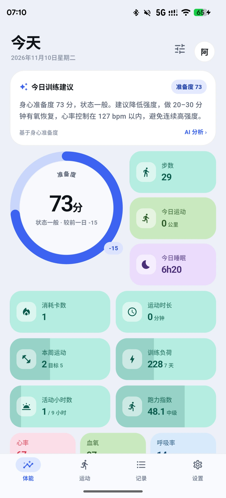

你的手表数据，
留在你自己的机器上。
Vitaloop（元环）是一款免费的 Android 健康与运动应用。 它通过蓝牙直连华为手表读取数据，全部写进本地 SQLite； 只有当你自己部署了服务端时，才会把数据同步上去。


能做什么
本地优先。不需要账号，没有遥测。
准备度与每日看板
由 HRV、睡眠、静息心率、皮肤温度、压力与恢复情况算出准备度评分； 缺失的指标会自动剔除，其余权重重新归一化。
华为手表同步
经典蓝牙 RFCOMM + HiChain 认证，配对流程参照 Gadgetbridge 的公开文档。 睡眠、心率、压力、HRV、血氧和运动记录增量拉取。
运动分析
地图轨迹、心率曲线、分段、海拔、跑步动态、训练负荷、训练计划， 支持 GPX/TCX 导出，以及把整场运动生成一张长图分享。
地形地图
Protomaps PMTiles 底图带绿色高程着色，叠加 DEM 山体阴影与服务端实时计算的等高线。 可倾斜到 45° 获得接近立体的视角，长按图层即可切换。
数据迁移与导出
一次性导入旧版数据库、运动轨迹、个人资料、目标与华为配对信息； 随时导出 GPX/TCX，数据不会被锁在应用里。
可选的自托管同步
账号制云端备份与实时轨迹分享，后端由你自己部署。 在填写服务器地址并登录之前，不会向外发送任何数据。
截图
来自 Android 构建，设备数据为演示用示例数据。点击图片可查看完整长图。


安装
Android 7.0 及以上，arm64。
- 下载签名后的 APK，在手机上打开安装。
- 允许你使用的浏览器或文件管理器安装应用。
- 授予定位、后台定位、附近设备与通知权限，轨迹记录和手表同步才能持续运行。
- 在设置 → 华为手表里配对；华为认证密钥流程见 配对指南。
演示版 APK 只把作者自己的服务器用于更新检查和地图瓦片。 请不要拿这个实例同步真实健康数据 —— 请自己部署一份服务端。
源码
AGPL-3.0。没有账号系统、遥测或内置密钥。
Vitaloop 已开源：
Flutter 应用与 Rust 核心、
自托管 Rust 服务端
均已公开。服务端包含
src/ephemeris.rs 中的 AGNSS 星历打包逻辑，因此星历服务同样开源。
华为手表配对
经典蓝牙 RFCOMM + HiChain 认证。配对时请保持手表在场且电量充足。
首次配对
- 先在系统蓝牙设置里把手表和手机配对。
- 打开 Vitaloop → 手表，选择手表并点击连接。
- 输入手表当前绑定的华为账号。
- 在手表上确认允许，同步随后自动开始。
免恢复出厂迁移
如果手表已绑定华为运动健康，又不想恢复出厂，可先安装旧版
awen-sync 把 HiChain 凭据迁过来。之后在 Vitaloop 里选择
手表并连接。
保持连接稳定
不要在华为运动健康里解绑手表，否则认证密钥会作废。同步期间关闭或 卸载官方应用，避免两端争抢蓝牙连接。
- Authentication key negotiation failed — 手表已有 Vitaloop 没有的凭据；先迁移凭据，或恢复出厂后首次配对。
- 已连接但不同步 — 核对手表页的华为账号，重新连接，并查看连接日志。
- 手表迟迟不弹确认 — 把手表贴近手机重试；连接日志会显示卡在哪一步。
自托管服务端
单个静态 Rust 二进制，运行时零第三方 crate。
- 账号 — 邮箱 + 密码，加盐 SHA-256 迭代 60k 轮，30 天 Bearer 会话。
- 同步 — 全量健康快照加只追加的增量日志，读取时合并。
- 运动 — 按账号缓存，提供列表与详情接口。
- 地图 — PMTiles 样式/瓦片代理、DEM 瓦片， 以及用公开高程数据现算的等高线瓦片。
部署
Docker Compose 会编译 musl 二进制，并运行在 scratch 镜像里。
git clone https://github.com/monkey-wenjun/vitaloop-server.git
cd vitaloop-server
docker compose up -d --build静态 Rust 二进制监听 127.0.0.1:8793，只挂一个数据卷。前面套一层 HTTPS，再把应用里的 设置 → 账号 → 服务器 指向你自己的域名即可。
MCP 接口
Streamable HTTP + JSON-RPC 2.0，地址为 /mcp。一次 POST 返回一条 JSON-RPC 响应，不使用 SSE。
连接 MCP 客户端
{
"url": "https://your-vitaloop-domain/mcp",
"headers": {
"Authorization": "Bearer <session-token>"
}
}
Bearer 会话能读取该账号的全部健康数据。请走 HTTPS、把 token 保存在
本地 MCP 客户端里，并且不要发布或转发。支持的协议版本为
2024-11-05、2025-03-26 和
2025-06-18。
方法与错误码
initialize、notifications/initialized、ping、tools/list、tools/call。- 结果同时返回
structuredContent，以及content[0].text里的等价紧凑 JSON。 - 错误码：解析失败
-32700，非法请求-32600，未知方法-32601，参数错误-32602，鉴权失败-32001。
只读健康工具
14 个工具 · Unix 毫秒 · 结果按时间倒序
| 工具 | 返回内容 | 参数 |
|---|---|---|
health_summary | 近 N 天健康总览 | days，1–3650，默认 7 |
blood_pressure | 血压记录 | from_ms、to_ms、limit |
blood_glucose | 血糖记录 | |
weight | 体重与体成分 | |
temperature | 腕温 / 核心体温采样 | |
hrv | HRV 记录 | |
stress | 每日压力 | |
spo2 | 每日血氧 | from_ms、to_ms、limit |
heart_rate | 心率采样点 | from_ms、to_ms、limit；默认最近 24 小时 |
metric_points | 通用指标时间序列 | from_ms、to_ms、limit、metric；默认最近 24 小时 |
sleep | 睡眠会话、卧床与分期 | from_ms、to_ms、limit |
daily_metrics | 每日汇总 | |
workouts | 运动记录 | |
query_table | 白名单内的任意只读健康表 | table，另加时间窗口与 limit |
时间参数是 Unix 毫秒；日汇总用 date_day（epoch 天）。
limit 默认 200、上限 2000，结果按时间倒序。数值与列名保持
快照原样，不做单位换算。query_table 只接受健康表白名单。
隐私模型
体验版构建不包含默认云服务、星历服务、API Key 或签名密钥。
默认只在本地
健康数据写在设备的 SQLite 里。不登录也能记录、分析、迁移和导出。
云端需要主动开启
在填写服务器地址并登录之前，同步是关闭的。服务端只保存加盐后的密码哈希，不保存密码本身。
没有追踪器
默认构建里没有广告 SDK、没有产品遥测，也没有第三方统计。